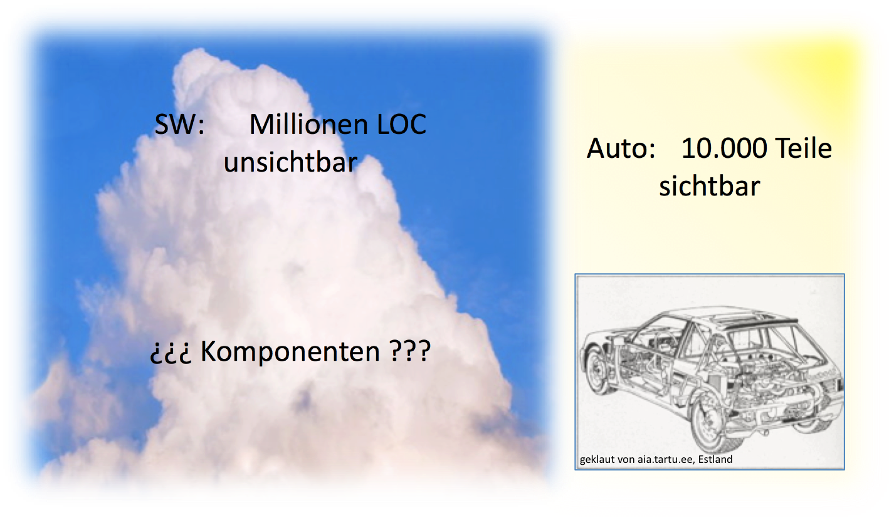

Programmierparadigmen – Einstieg
Beispiele
Interpretieren Sie diesen Programmcode:
(defn power [x y] (if (= y 0) 1 (* x (power x (- y 1)))))
Aufgabe
Schreiben Sie eine statische Java-Methode, die ein Array von doubles als Argument akzeptiert und den Durchschnitt der Zahlen liefert.
Lösung
versus
(defn average [numbers] (/ (apply + numbers) (count numbers)))
Frage: Was tut die Methode isBlank?
public class StringUtils { public static boolean isBlank(String strng) { int strngLen; if (strng == null || (strngLen = strng.length()) == 0) { return true; } for (int i = 0; i < strngLen; i++) { if ((Character.isWhitespace(strng.charAt(i)) == false)) { return false; } } return true; } }
Zum Vergleich:
(defn blank? [strng] (every? #(Character/isWhitespace %) strng))
Aufgabe
Gegeben ist eine Liste mit Preisen:
final List<BigDecimal> prices = Arrays.asList( new BigDecimal("10"), new BigDecimal("30"), new BigDecimal("17"), new BigDecimal("20"), new BigDecimal("15"), new BigDecimal("18"), new BigDecimal("45"), new BigDecimal("12"));
Schreiben Sie Java-Code, der alle Preise größer als 20, rabattiert um 10%, aufsummiert.
Lösung
Java < 8
Java 8
Clojure
(def prices (map bigdec [10 30 17 20 15 18 45 12])) (def totalOfDiscountedPrices (reduce + 0 (map (fn [p] (* p 0.9M)) (filter (fn [p] (> p 20M)) prices)))) ;; oder syntaktisch gezuckert (def totalOfDiscountedPrices2 (->> prices (filter #(> % 20M)) (map #(* % 0.9M)) (reduce + 0)))
????
prices := #(10.0s 30.0s 17.0s 20.0s 15.0s 18.0s 45.0s 12.0s).
totalOfDiscountedPrices :=
((prices select: [:p | p > 20.0s])
collect: [:p | p * 0.9s])
fold: [:sum :p| sum + p]
Aufgabe: Mehr Geld bitte!
Sie senden einen Brief an Ihre Eltern mit dem Inhalt:
SEND
+MORE
-----
MONEY
Wieviel Geld erhalten Sie?
Die Aufgabe besteht darin, jedem Buchstaben aus \(\{S,E,N,D,M,O,R,Y\}\) eine unterschiedliche Ziffer aus \(\{0,...,9\}\) zuzuordnen, so dass die Gleichung \[SEND+MORE=MONEY\] erfüllt wird.
Aufgabe: Lösen Sie das Problem in einer Programmiersprache Ihrer Wahl! Beachten Sie Nebenbedingungen.
Lösungsansatz: „Rohe Gewalt“
- Alles durchprobieren!
- Man braucht 8 ineinander geschachtelte Schleifen.
- Achtung: Acht Variablen (
S,E,N,D,M,O,R,Y) können zehn verschiedene Werte annehmen. Ergibt \(10^{8}\) Möglichkeiten. - Allerdings verringern einschränkende Bedingungen die Zahl der Möglichkeiten:
SundMdürfen nicht \(0\) sein.- Da
Mals Übertrag entsteht, kannMnur \(1\) sein. - Die Werte der Variablen müssen paarweise verschieden sein.
- Weitere logische Überlegungen über Zusammenhänge zwischen den Ziffern können das Verfahren beschleunigen (s. u.).
- Lösung z. B. in Smalltalk:
Resultat:
9567 + 1085 ------ 10652
Lösungsansatz: Constraint Satisfaction
- Einfaches Modell durch Spezifikation der folgenden Gleichung als Einschränkung: \[1000*S+100*E+10*N+D \] \[+ 1000*M+100*O+10*R+E \] \[= 10000*M+1000*O+100*N+10*E+Y\]
- Den Variablen \(E, N, D, O, R, Y\) wird die Domäne \(\{0 \ldots 9\}\), der Variablen \(S\) die Domäne \(\{1 \ldots 9\}\) und \(M\) die Domäne \(\{1\}\) zugeordnet.
- Außerdem muss die Einschränkung \(all\_different([S,E,N,D,M,O,R,Y])\) hinzugefügt werden.
- Das Modell ist nicht effizient, weil alle Variablen bis auf eine schon belegt sein müssen, bevor die „Haupteinschränkung” geprüft werden kann.
Verfeinertes CSP-Modell
Nutzung der Überträge der Addition für die Zerlegung der „großen“ Einschränkung in mehrere kleine:
\begin{eqnarray*} E+D & = & Y+10*C1 \\ C1+N+R & = & E+10*C2 \\ C2+E+O & = & N+10*C3 \\ C3+S+M & = & 10*M+O \end{eqnarray*}Die Domänen der Variablen:
\begin{eqnarray*} E,N,D,O,R,Y & := & \{0,\ldots,9\} \\ S & := & \{1,\ldots,9\} \\ M & := & \{1\} \\ C1,C2,C3 & := & \{0,1\} \end{eqnarray*}- Die „kleinen“ Einschränkungen werden während der Belegungsphase früher geprüft und damit inkonsistente Belegungen ausgesondert.
Software-Technik – eine unreife Technologie?
Hat die Software-Technik ein Problem?
fragt AmitRathore2012
- Warum ist kein Software-Projekt so einfach wie es scheint?
- Warum wird kein Software-Projekt rechtzeitig und unter Einhaltung des Budgets fertig?
- Warum hat jede nicht-triviale Software Fehler?
- Warum tut Software oft nicht das, was sie tun soll?
- Warum ist es so schwierig, Änderungen an Software vorzunehmen?
- Gleichgültig, wie klar der Plan eines Projekts zu Beginn war, warum wird daraus am Ende immer ein riesiger Haufen Morast?
- Alle kennen das Problem und scheinen es zu akzeptieren!?
- Die Software-Industrie reagiert mit Puffern für Zeit und Budget und der Akzeptanz mittelmäßiger Software!?
Viele Software-Projekte werden durch falsche Annahmen von vornherein gefährdet.
So ist es meistens falsch, anzunehmen, dass
- der Anwender bei Projektbeginn genau weiß, was er will,
- der Anwender das, wovon er weiß, dass er es will, vollständig mitteilen kann,
- der Entwickler ausreichend verstanden hat, was der Anwender mitteilen konnte,
- das kommunizierte Wissen ausreicht, um die vom Anwender gewollten Funktionen produzieren zu können,
- der Entwickler eine wissenschaftlich begründete Methode besitzt, um das Verstandene in Software zu übertragen,
- der Anwender versteht, was der Entwickler außer den vorgelegten Beispielen noch leisten könnte,
- der Anwender also wüsste, welche Software möglich wäre, wenn der Entwickler besser über seine Bedürfnisse unterrichtet wäre.
Ein „berühmtes” Beispiel
W. Gibbs in Scientific Armerican:
- 1994 sollte der Denver International Airport als gigantisches, technisches Wunderwerk mit einem vollautomatischen unterirdischen Gepäcktransportsystem eingeweiht werden.
- Die gesamte Hardware incl. 400 Telecars war pünktlich fertig; die Software fehlte.
- Die Eröffnung musste immer wieder verschoben werden.
- Neun Monate später konnte der Software-Hersteller noch keine Prognose zum Fertigstellungstermin abgeben.
Thomas C. Hales bemerkt in Formal Proof
- On average, a programmer introduces 1.5 bugs per line while typing. Most are typing errors that are spotted at once.
- About* one bug per hundred lines of computer code ships to market without detection*.
- Bugs are an accepted part of programming culture.
- The book that describes itself as the „bestselling software testing book of all time“ states that „testers shouldn't want to verify that a program runs correctly“.
- Another book on software testing states „Don't insist that every bug be fixed … When the programmer fixes a minor bug, he might create a more serious one.“
- Corporations may keep critical bugs off the books to limit legal liability. Only those bugs should be corrected that affect profit. The tools designed to root out bugs are themselves full of bugs.
Software besteht aus Millionen Code-Zeilen
- die einzige Sicht: Programmtext
- Baumstruktur links zeigt nicht die Abhängigkeit der Komponenten.

Software ist unsichtbar

Beispiel zur Schärfung des Problembewusstseins
- Aufgabenstellung (in Anlehnung an KlaerenSperber2007)
Auf einem Parkplatz stehen Personenkraftwagen und Motorräder ohne Beiwagen. Zusammen seien es \(n\) Fahrzeuge mit insgesamt \(m\) Rädern. Bestimme die Anzahl \(P\) der PKWs!
- Typische informelle Problemspezifikation.
- Gesucht ist eine Berechnungsvorschrift für die Funktion \(P(n, m)\).
- Wie kann der Zusammenhang zwischen der Anzahl der PKWs \(P(n,m)\), der Anzahl der Motorräder \(M(n,m)\), der Anzahl der Räder \(m\) und der Anzahl der Fahrzeuge \(n\) formuliert werden?
Beispiel zur Schärfung des Problembewusstseins (2)
- Lösung des Gleichungssystems:
- Problem scheinbar gelöst. Formel könnte in ein Programm übersetzt werden. ABER: Was liefert die Formel für \(n=3\) und \(m=9\)?
- Anderthalb PKWs stehen auf dem Parkplatz!
Beispiel zur Schärfung des Problembewusstseins (3)
- Schlussfolgerung: \(m\) muss gerade sein.
- ABER: Was liefert die Formel für \(n=5\) und \(m=2\)?
- ABER: Was liefert die Formel für \(n=2\) und \(m=10\)?
- Problem: Unsinnigkeit des Ergebnisses nicht sofort erkennbar. (Wenn 3 von 2 Fahrzeugen PKWs sind, muss es noch ein „negatives” Motorrad geben.)
Beispiel zur Schärfung des Problembewusstseins (4)
- Schlussfolgerung: Die Anzahl der Räder darf höchstens viermal so groß sein wie die Anzahl der Fahrzeuge.
- Fazit:
- Die Problemspezifikation ist unvollständig. Das „Programm“ liefert nur dann sinnvolle Ergebnisse, wenn folgende Bedingung gilt: \[m \mbox{ gerade und } 2n\leq m \leq4n\]
- Fehlerhafte Abstraktion: In der mathematischen Formel sind \(m\) und \(n\) irgendwelche Zahlen, auf dem Parkplatz aber nicht.
Was ist ein Paradigma?
Das Wort Paradigma leitet sich vom griechischen Wort παράδειγμα (parádeigma) ab, das (lt. Menge-Güthling) übersetzt Beispiel oder Vorbild bedeutet.
Laut Duden sind Synonyme: [Fall]beispiel, Leitbild, Modell[fall], Muster[beispiel], Musterbild, Vorbild; (bildungssprachlich) Inkarnation, Prototyp; (bildungssprachlich veraltend) Exempel
Häufig wird das Wort im Sinne von Denkmuster gebraucht.
Was ist ein Programmierparadigma?
Begriffsbestimmung
übliche Klassifikationen
| Imperative Programmierung | Deklarative Programmmierung | ||
|
Prozedurrale Programmierung |
Objektorientierte Programmierung |
Funktionale Programmierung |
Logische Programmierung |
- Imperativ Programmieren heißt, zu beschreiben, wie die Lösung eines Problems zu erzielen ist.
- Deklarativ Programmieren heißt, zu beschreiben, was das zu lösende Problem ist.
Die „klassischen” Programmierparadigmen
- Imperative Programmierung
- Grundkonzepte: Variablen, Wertzuweisungen
- Programm = Folge von Anweisungen, die eine Zustandsänderung bewirken
- Strukturierte Sprachen
- Modulare Sprachen
- Objektorientierte Sprachen
- Hybride Sprachen
- Funktionale (applikative) Programmierung
- Grundkonzept: Funktion i.S.d. Mathematik
Programm = Ausdruck, der einen Wert als Ergebnis liefert
(defn power [x y] (if (= y 0) 1 (* x (power x (- y 1)))))
- Logische (prädikative) Programmierung
- Grundkonzept: Formale, mathematische Logik
Beispiel: Sprache Prolog mit Fakten und Regeln
Fakten:
- Hans ist direkter Chef von Franz.
- Franz ist direkter Chef von Heinz.
direkterChef(hans, franz).direkterChef(franz, heinz).
Regeln:
- Eine Person X ist Vorgesetzter von Y, wenn X direkter Chef von Y ist oder wenn X direkter Chef von Z und Z Vorgesetzter von Y ist.
vorgesetzter(X,Y):-direkterChef(X,Y).vorgesetzter(X,Y):-direkterChef(X,Z), vorgesetzter(Z,Y).
Prozedurorientiertes vs. objektorientiertes Denken
(Darstellung angelehnt an Moessenboeck
- Prozedurorientiertes Denken: Algorithmen, Prozeduren stehen im Vordergrund, Daten sind „zweitrangig“.
- Beispiel: Flächenberechnung vom geometrischen Figuren:

flaeche := kreisFlaeche(kreis);
flaeche := rechteckFlaeche (rechteck);
Merkmale der prozeduralen Programmierung
- in konventionellen Sprachen für jede Figurart eigene Prozedur erforderlich
Fallunterscheidungen notwendig, wenn in einem Programm Figuren verschiedener Arten gleichzeitig vorkommen; sei z.B. \(f\) eine beliebige geometrische Figur:
... if f is Rechteck then flaeche := rechteckFlaeche(f) elsif f is Kreis then flaeche := kreisFlaeche(f) elsif f is Dreieck then flaeche := dreiecksFlaeche(f) ...- Warum sind solche Fallunterscheidungen problematisch?
Objektorientiertes Denken …
… stellt die Daten in den Mittelpunkt der Betrachtung:
flaeche := f flaechenInhalt
flaeche = f.flaechenInhalt();
Merkmale der Objektorientierten Programmierung:
- Ein Objekt antwortet auf den Empfang einer Frage (einer Nachricht).
- Das Figurobjekt „weiß selbst“ wie die Antwort (der Flächeninhalt) zu ermitteln ist.
- Fallunterscheidungen werden weitgehend überflüssig.
Die Überbrückung der „Abstraktionslücke“

Bedeutung der Abstraktion in der Software-Technik
- Komplexität von Softwaresystemen überfordert
- die Fähigkeit von Menschen, sie in Gänze zu erfassen,
- die Fähigkeit der Entwickler, sie so zu bauen, dass sie den Anforderungen in korrekter Weise entspricht.
- Wenn ein Entwickler für eine Aufgabe sechs Monate benötigt, wie lange brauchen dann sechs Entwickler, wenn sie die Aufgabe gemeinsam erledigen sollen?
- Ohne leistungsfähige Abstraktionskonzepte ist die Beherrschung von Komplexität unmöglich.
- Die Zeit, die ein Programmierer benötigt, um eine Zeile Code zu schreiben, ist eine Konstante (unabhängig von der Programmiersprache).
- Daher ist das Abstraktionsniveau der von einer Programmiersprache
bereitgestellten Ausdrucksmittel entscheidend
- für die Beherrschung von Komplexität und
- die Produktivität der Programmierer.
Eine Bezahl-App
Entwicklung beschrieben durch Wille Faler in http://agile.dzone.com/news/one-night-clojure-makes-scala
„A simple metric generated with cloc“:
- Java version: 755 lines of code (LOC)
- Scala version: 200 LOC's
- Clojure version: 57 LOC's